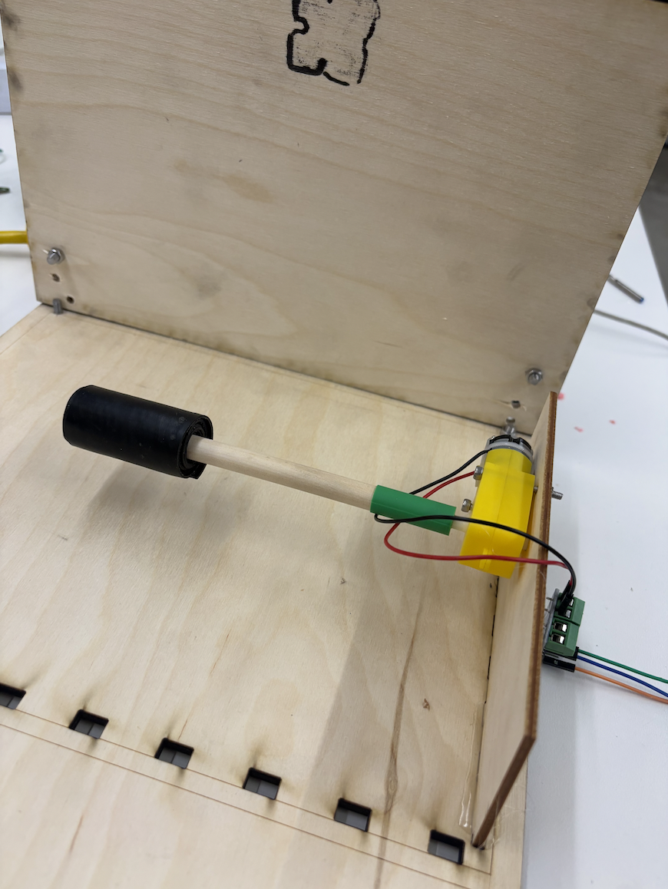
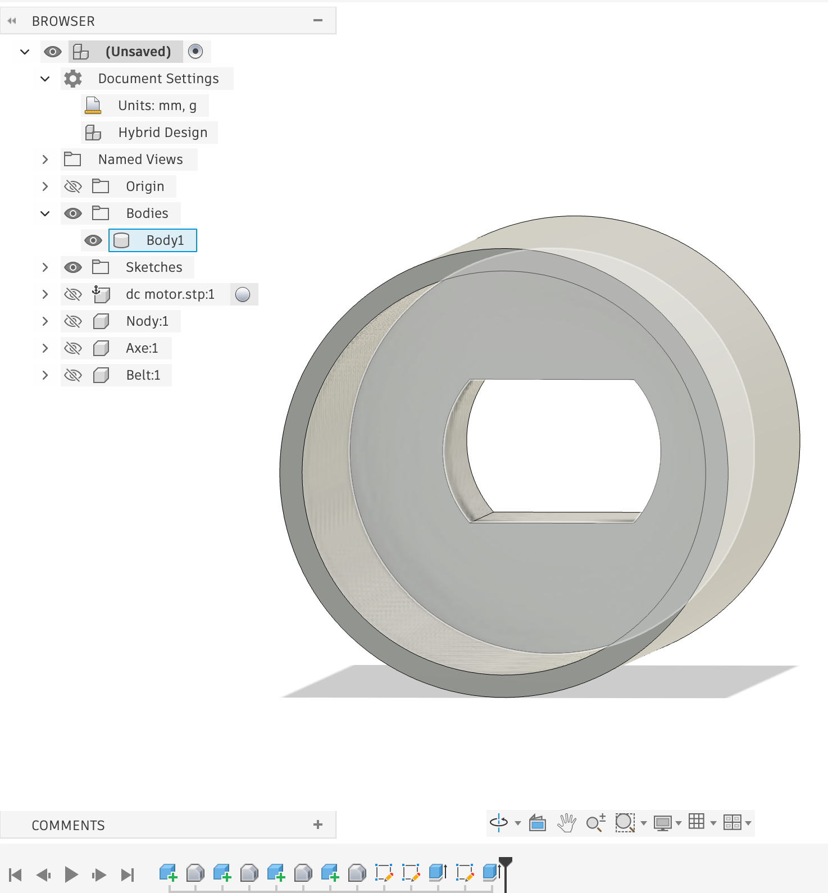
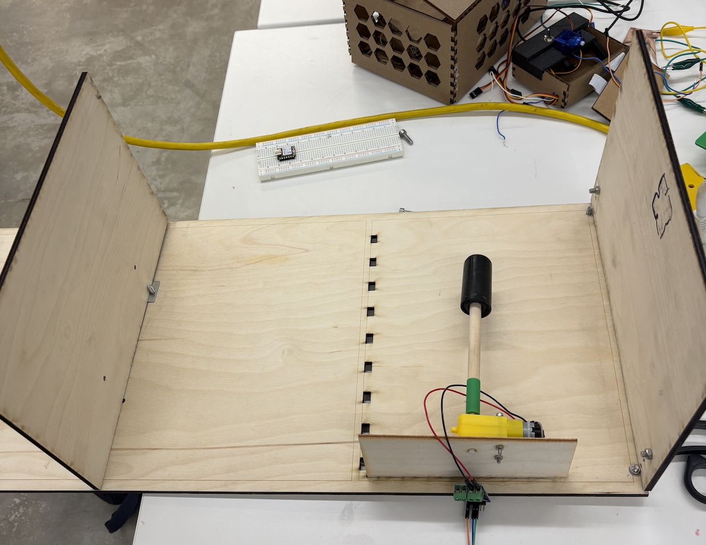
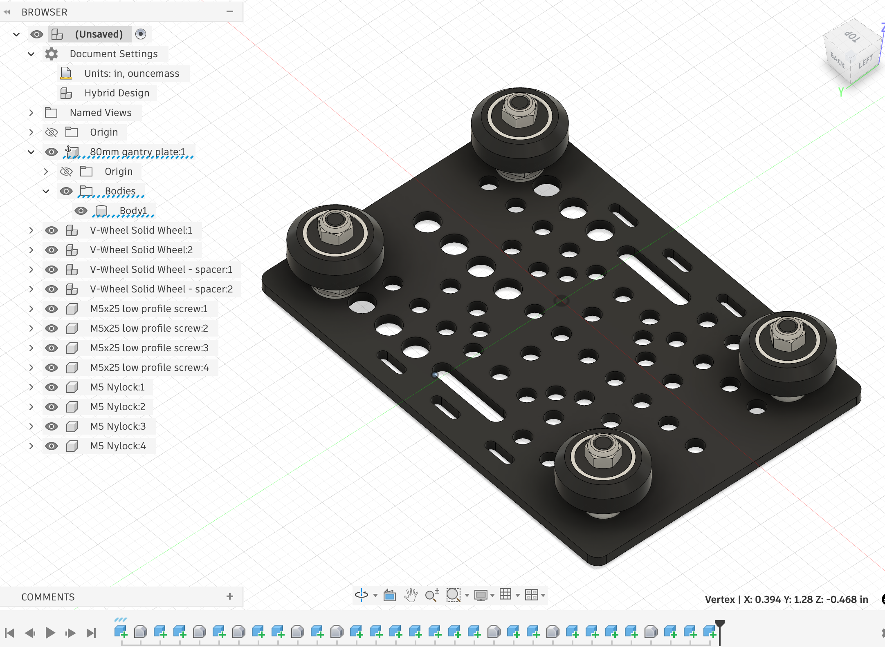

<div class="textcontainer">
<h3>Week 7: Outputs</h3>
<p class="margin"> </p>
# I have started making my "paper organizer project"
The main idea is that I write a lot of my notes on papers I read - lots of highlights, side notes etc. And I always lose them and when I want to come back to them, can't find them anymore.
So I built this paper scanner and organizer.
First, I took inspiration from printers and how they roll paper.
<p></p>
I 3d printed a converter from the servo motor to a wood cilinder I found in the lab, and wrapped it with some rubber.
<p></p>
Some mishaps here: The calipers were not accurate enough so I had to "guesstimate" the diameter of the cylinder until it fit tightly.
I also did try to hot glue it inside, but as some might know, plastic and hot glue don't mix well...
I laser cutted the enclosure out of 6mm plywood and screwed it together with some brackets.
<p></p>
# I then moved on to another part which seemed very scary to me: a gliding mechanism which will have the camera and maybe a paper grabber.
I saw one of Bobby's gliding mechanisms and tried to reverse engineer it - and I'm almost done!
I ended up 3d printing the slider, and then fitting some wheels and attaching them to the aluminum bar.
<p></p>
<video controls autoplay loop muted style="width: 50%;">
<source src="IMG_9118.MOV" type="video/mp4">
</video>
## It works surprisingly well! So I got 2 of them, and then uhmmm... ziptied a breadboard with my ESP32-CAM and the motor driver connected.
# So then I got everything running!
## The paper is being fed fine-ish but I have to support it on one side -> Also I need to move the roller more to the side most likely.
<video controls autoplay loop muted style="width: 50%;">
<source src="IMG_9125.MOV" type="video/mp4">
</video>
## Overall, it works pretty well. I have to add the motor and pulley to the top camera chaser, and implement the software to actually scan the page, but that should be fine! Software is easy
<video controls autoplay loop muted style="width: 50%;">
<source src="IMG_9127.MOV" type="video/mp4">
</video>
# Code: